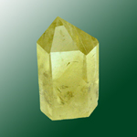

Название камня цитрин произошло от лат. citrus — лимонно-желтый. Другие названия минерала и его разновидностей: золотистый топаз, испанский топаз. Полудрагоценный камень, разновидность горного хрусталя. Цитрин является золотистой разновидностью кварца. Окраска цитрина от светло-лимонной до янтарно-медовой.
Физические свойства цитрина:
Эта порода имеет различные оттенки золотистого, коричневого и оранжевого. Цитрин очень яркий и отличается ни с чем не сравнимым блеском. По цвету данной породы можно установить природу ее происхождения: бледный цитрин имеет натуральное происхождение, яркий — искусственное. Натуральный цитрин не такой яркий, как искусственный, он более прозрачный.
Цитрин зарождается в почвах с гидротермальными образованиями. Основное месторождение данной породы находится в Бразилии. Также цитрин добывают в Америке, на Мадагаскаре, во Франции, Испании, Великобритании. Особые экземпляры данного камня находят на Урале (Россия), а также в Центральном Казахстане.
Сегодня цитрин получают еще и искусственным путем. Для этого при большой температуре обрабатывают морионы, дымчатый кварц, аметист. Цитрин, добытый искусственным путем, окрашен неравномерно. Обычно основание такого камня светлее, чем верхушка.
Залежи цитрина встречаются не так уж часто. Самые крупные месторождения цитрина сосредоточены в Бразилии, эта страна – лидер по добыче солнечных камней разных размеров и оттенков. Добывают качественные цитрины также в США, Испании, Франции, и Шотландии. Камни, извлекаемые из недр земли на Урале и в Казахстане, имеют винно-желтый оттенок.
Каталог минералов